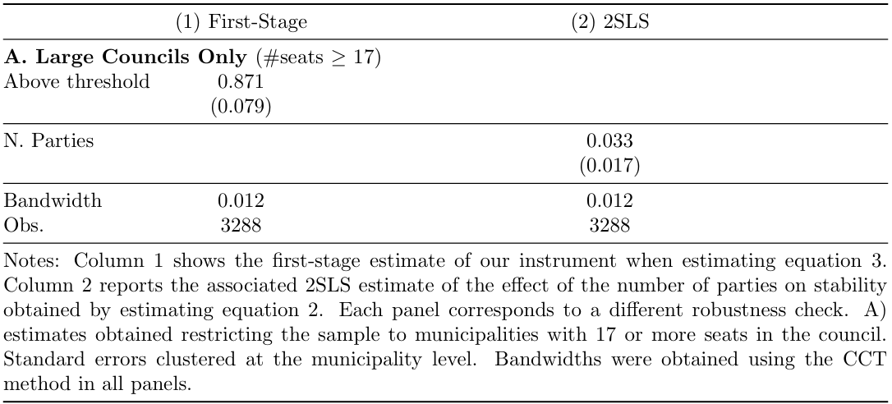

3.2 Political Fragmentation and Government Stability: Evidence from Local Governments in Spain
Carozzi, F., Cipullo, Da. & Repetto, L. (2022). Political Fragmentation and Government Stability: Evidence from Local Governments in Spain. American Economic Journal: Applied Economics, 14 (2): 23-50. https://www.aeaweb.org/articles?id=10.1257/app.20200128
[Link to the full original replication package paper on OSF]
Highlights
The paper investigates the impact of political fragmentation on government stability.
The authors employ a fuzzy Regression Discontinuity Design (RDD) model.
It belongs to the the regression discontinuity design broad methodology, which is a quasi experimental method used to estimate the causal effect of an intervention over a threshold or a cutoff point. It enables the comparison of individuals immediately above and below this specific cutoff point to assess the impact of a treatment on a particular outcome.
In a fuzzy RDD design the assignment rule determining how units are selected into the treatment is probabilistic. The probability of treatment exhibits a discontinuity at the cutoff, though not as a definitive 0 to 1 jump.
In regards to the original replication package, we present here a simplified version of its main elements for an easy replication with only one dataset and one do-file.
Through this exercise, on top of standard Stata commands, we present a more in-depth explanation on how to make results’ tables using the
esttabcommand, make more complex graphs with thetwowaycommand and, specially, discover some commands from therdrobustpackage, key for RDD analysis in Stata.
3.2.1 Introduction
The replication of research papers plays a pivotal role for Economics students. It allows them to learn about the implementation of econometrics methods, and to enhance the use of statistical software programs to further develop empirical works. This document provides a replication exercise for a fuzzy regression discontinuity design (RDD) model that estimates the impact of political fragmentation on government stability. It builds on a paper by Carozzi, Cipullo and Repetto (2022).
Specifically, this project aims to provide a comprehensive guide on executing an RDD model in Stata. It details the execution of the model through the use of commands and code, while explaining the fundamental concepts of this methodology in the process.
The content is structured in six parts. Section one provides an explanation on RDD methodology and a summary of the paper. Section two briefly explains how to set up your Stata environment to be able to do smoothly run this replication. Section three explains how to obtain and present summary statistics. Section four addresses the empirical strategy, explaining how to plot discontinuity graphs. Section five presents the main results, while showing how to perform RDD regressions and store and present results in tables. Finally, section six discusses the importance of robustness checks and provides explanations on the helpful commands to perform them in the context of the presented methodology.
3.2.2 RDD Methodology and Paper Summary
The regression discontinuity design (RDD) is a quasi experimental method used to estimate the causal effect of an intervention over a threshold or a cutoff point. It enables the comparison of individuals immediately above and below this specific cutoff point to assess the impact of a treatment on a particular outcome. The method relies on the assumption that individuals near the cutoff point share similar observed and unobserved characteristics.
An RDD may adopt a fuzzy design, wherein the assignment rule determining how units are selected into the treatment is probabilistic. The probability of treatment exhibits a discontinuity at the cutoff, though not as a definitive 0 to 1 jump. The fuzziness in the design derives from factors such as imperfect compliance or manipulation of the selected threshold. In terms of results, an RDD estimates local average treatment effects around the cutoff point, where treatment and comparison individuals are most similar.
In the paper we replicate, the authors adopt a fuzzy RDD model in order to study how political fragmentation affects government stability.
The data employed is a panel of Spanish municipalities from 1979 to 2014. The time dimension corresponds to each legislature, indexed by the year of the corresponding municipal election (1979 to 2011). The main data sources consist of electoral records, data on individual mayors and mayoral changes, municipal demographics (population, density, etc.), and data on the composition of regional and national governments. Electoral outcomes in municipal elections were obtained from the Ministry of Internal Affairs and residential registry. The sample consists of municipalities with more than 250 inhabitants for a total of 51,000 elections. The final dataset includes 42,259 elections because of additional data restrictions.
To obtain causal estimates of the effect of fragmentation – measured as the number of parties in the council – on government stability, they exploit the existence of a 5% vote-share threshold for admission to the local council. This threshold causes parties with vote-shares just below 5% to be excluded from the council, generating exogenous variation in the number of parties with representation. Results show that each additional party with representation in the parliament increases the probability that the incumbent government is unseated by 5 percentage points.
3.2.3 Good Practices Before Starting
In this section, we advise on two procedures before starting an empirical analysis in Stata.
First, the creation of the toy dataset from the original replication package, for which we also provide a codebook (see header for downloads). Then, the creation of folders, which assures an organized storage of the analysis’ inputs and outputs. Finally, the installation of all packages required to successfully carry out the replication.
Toy dataset
clear
set more off
*download datasets Data_final.dta and Data_final_allparties.dta from https://www.openicpsr.org/openicpsr/project/125341/version/V1/view?path=/openicpsr/125341/fcr:versions/V1/PFGS_Replication_package_AEJ/Data/Clean&type=folder
global dt "PUT YOUR OWN WORKING DIRECTORY HERE (where you stored the data)"
*******************************************************************************
*DATASET FOR DESCRIPTIVE STATISTICS
*******************************************************************************
use "$dt\Data_final.dta", clear
* Drop problematic obs.
keep if tag == 0 | tag == 6
*Keep some variables
keep id_towns log_surface surface pop* tag* election_year nominated_date3 total_seats CCAA party1 party2 population_scrutiny votes_blank votes_void province nmayors votes_total_muni turnout nparties_seats nparties allvalidvotes log_pop log_surface party_five_percent* abs_majority party_mayor* seats_total mocion_5
egen population_average=mean(population_legal), by(id_towns)
replace population_average=population_average/1000
egen number_elections=sum(1), by(id_towns)
label var population_average "Mean Population 000s (1979-2014)"
label var surface "Surface (in km2)"
label var number_elections " # of Elections in sample "
gen PP_mayor=(party_mayor1=="PP"| party_mayor1=="AP/PDP/UL")*100
gen PSOE_mayor=(party_mayor1=="PSOE")*100
gen IU_mayor=(party_mayor1=="IU"| party_mayor1=="PCE")*100
gen CIU_mayor=(party_mayor1=="CIU")*100
gen mocion_5_100=mocion_5*100
replace abs_majority=abs_majority*100
label var mocion_5_100 "Vote of No Confidence (%)"
label var nparties "# of Parties Running"
label var seats_total "# of Council Seats"
label var abs_majority "Single-party Majority (%)"
label var nparties_seats "# of Parties in Council"
label var PP_mayor "1st Mayor - PP (%)"
label var PSOE_mayor "1st Mayor - PSOE (%)"
label var IU_mayor "1st Mayor - IU (%)"
label var CIU_mayor "1st Mayor - CIU (%)"
gen Descrip_sample = 1
label var Descrip_sample "1 if observation corresponds to sample data to replicate the descriptive statistics"
keep id_towns election_year population_average surface number_elections nparties nparties_seats seats_total mocion_5_100 abs_majority PP_mayor PSOE_mayor IU_mayor CIU_mayor abs_majority nparties_seats mocion_5 Descrip_sample
save "$dt\Database1.dta", replace
******************************************************************************
*DATASET FOR FIGURE 3 AND MAIN RESULTS
******************************************************************************
use "$dt\Data_final_allparties.dta", clear
* Use as r.v. the vote share distance of each party from 5% *
replace rv = all_rv
replace d = all_d
replace rv_d = all_rv_d
*Drop problematic obs.
keep if tag == 0 | tag == 6
*Label
label var mocion_5 "Mayor uns."
*keeping useful variables
keep log_pop log_surface election_year seats_total id_towns nparties nparties_seats rv d rv_d mocion_5
gen Mainresults_sample = 1
label var Mainresults_sample "1 if observation corresponds to sample data to replicate the main results and robustness"
save "$dt\Database2.dta", replace
*******************************************************************************
*FINAL REPLICATION DATASET
*******************************************************************************
use "$dt\Database1.dta", clear
append using "$dt\Database2.dta"
save "$dt\Dataset_CCR.dta", replaceFolder creation
Create the appropriate folders and globals to store your datasets and results. A global is a named storage location that can hold a value or a string of text. We use the command “global” to define it and the prefix “$” to access it.
Package Installation
To carry out the replication of this paper, the following packages must be installed:
ssc install missings // Provides tools and commands for working with missing data.
ssc install rdrobust // Provides tools and commands to execute a regression discontinuity
// design methodology.
ssc install ivreg2 // Extends Stata’s built-in instrumental variables (IV) estimation
// capabilities.
ssc install estout // Provides additional formatting and exporting options for regression
// results.
ssc install outreg2 // Provides additional options formatting regression results for
// output in tables.
ssc install ranktest // Provides additional tests for rank-related issues, such as rank
// correlation coefficients.3.2.4 Descriptive Statistics
After setting the Stata environment, we can begin to explore the data characteristics through the computing of descriptive statistics to achieve the replication of Table 1.
The dataset provided for this replication exercise contains two samples:
The first sample, used to make the descriptive statistics, consists of a town panel by election year. Therefore, each observation corresponds to a town on an specific election year. To access it, either keep at the beginning only the observations for which the sample indicator is equal to 1 or state it as a condition at the end of every estimation code line. We suggest using the first option:
The second sample, used to produce the main results and robustness tests for the paper, consists of a party dataset, where in each observation a party appears once per town and election year. To access it, either keep at the beginning only the observations for which the sample indicator is equal to 1 or state it as a condition at the end of every estimation code line. We suggest using the first option:
Table 1: Descriptive Statistics
Now, in order to replicate each panel from Table 1. Descriptive Statistics we first open the dataset and, as stated before, keep only the observations needed for the replication of the descriptive statistics:
Panel A. General information
We now use the ”preserve” command to create a copy of the dataset in the Stata memory, so that any changes or modifications will only affect this temporary copy. This is done as subsequently the variable “election year” is dropped and the town duplicates too. This leaves us with a new dataset that corresponds to one observation per town and their respective population, surface and number of elections averages measures.
Now, we compute some summary statistics (mean, standard deviation, minimum, and maximum) using the “tabstat” command and store them in a matrix with the help of the “eststo: estpost” commands. After, we restore the dataset to its initial state before the “preserve” command was initialized.
eststo clear //Clear any previously stored matrix
eststo panelA: estpost tabstat population_average surface number_elections, ///
stat(mean sd min max) columns(statistics)
restoreFinally, we can replicate the table of Panel A of the Descriptive statistics table using the “esttab” command, which takes stored results from one or more estimation commands and formats them into a table.
esttab panelA, cells((mean(fmt(%18.2fc)) sd(fmt(2)) min(fmt(1)) max(fmt(0)))) nomtitles ///
nonum collabels("Mean" "Std. dev." "Min" "Max") ///
title("TABLE 1. DESCRIPTIVE STATISTICS") ///
refcat(population_average "A. General information", nolabel) ///
obslast varwidth(35) label ///
addnotes(Notes: "Panel A provides descriptives at the municipal level for all municipalities that appear at least once in our sample.")Explanation of “esttab” syntaxis and options: cells: specifies which results to show. nomtitles: removes the variable names in the columns’ titles. nonum: removes the numbering rows from the columns. collabels: adds custom column labels. title: adds a title for the table. refcat: creates an additional line with descriptions above some certain variables /groups of variables. obslast: puts the number of observations last. varwidth: specifies the width of the variable names displayed in the table. label: shows labels instead of variable names. addnotes: adds footnotes to the table.
The same computation of the summary statistics, storage and tabulation process is repeated for the remaining panels.
Panel B. Municipal Elections and Local Government
eststo panelB: estpost tabstat nparties nparties_seats seats_total mocion_5_100 ///
abs_majority PP_mayor PSOE_mayor IU_mayor CIU_mayor , stat(mean sd min max) ///
columns(statistics)
esttab panelB, cells((mean(fmt(%18.2fc)) sd(fmt(2)) min(fmt(1)) max(fmt(0)) )) nomtitles ///
nonum collabels("Mean" "Std. dev." "Min" "Max") ///
refcat(nparties "B. Municipal Elections and Local Government", nolabel) ///
obslast varwidth(35) label ///
addnotes(Notes: "Panel B provides descriptives on electoral outcomes at the municipality-council level.")Panel C.1 - Local Government - Stable Mayor
eststo panelC1: estpost tabstat abs_majority nparties_seats if mocion_5==0, ///
stat(mean sd min max) columns(statistics)
esttab panelC1, cells((mean(fmt(%18.2fc)) sd(fmt(2)) min(fmt(1)) max(fmt(0)) )) ///
nomtitles nonum collabels("Mean" "Std. dev." "Min" "Max") refcat(abs_majority ///
"C1. Local Government - Stable Mayor", nolabel) obslast varwidth(35) label ///
addnotes(Notes: "Panel C splits this sample into councils that approved at least one vote of no confidence during the term (C2), and those that did not(C1)")Panel C.2 - Local Government - Vote of No Confidence
eststo panelC2: estpost tabstat abs_majority nparties_seats if mocion_5==1, ///
stat(mean sd min max) columns(statistics)
esttab panelC2, cells((mean(fmt(%18.2fc)) sd(fmt(2)) min(fmt(1)) max(fmt(0)) )) ///
nomtitles nonum collabels("Mean" "Std. dev." "Min" "Max") ///
refcat(abs_majority "C2. Local Government - Vote of No Confidence", nolabel) ///
obslast varwidth(35) label ///
addnotes(Notes: "Panel C splits this sample into councils that approved at least one vote of no confidence during the term (C2), and those that did not (C1)")3.2.5 Empirical Strategy
After having carried out the descriptive statistics analysis, in this section we dive into the empirical strategy of the research paper. First, we describe the model specification, then we provide explanations on how to plot RDD graphs and, finally, we address how to perform the first stage.
The paper employs the following main specification:
\[\begin{equation} \tag{1} Y_{it} = α_{1} + τ_{1}N_{it} + β_{1}V_{pit} + β_{2}V_{pit}D_{pit} + π_{it} \end{equation}\]
Yit an indicator equal to 1 if the mayor of municipality i is unseated and replaced by a new mayor during term t – to the measure of fragmentation. This corresponds to the variable “mocion 5” in the dataset.
Nit the number of parties with seats in the council. This corresponds to the variable “nparties seats” in the dataset.
Vpit the running variable, representing the difference between the vote-share of each party p and 5% in each municipality i and for each term t. This corresponds to the variable “rv” in the dataset.
The number of parties N is instrumented with an indicator D equal 1 for a party being above the 5% threshold. This corresponds to the variable “d” in the dataset.
First stage estimation:
\[\begin{equation} \tag{2} N_{it} = α_{0} + γ_{1}D_{pit} + δ_{1}V_{pit} + δ_{2}V_{pit}D_{pit} + u_{pit} \end{equation}\]
Figure 1 shows both the first stage and the reduced form graphs. These figures are relevant on RDD analysis, since they provide a visual representation of the existence of a discontinuity at the threshold.
Figure 1: The effect of fragmentation on instability - first stage and reduced form (RD graph)

In order to replicate these graphs, the mains results and the robustness checks, first we are going to keep only the observations needed.
Figure 1: Top Panel
Since this is a fuzzy design, the first panel plots the running variable against the variable that it will instrument. In this case, the running variable against the number of party seats in council. In order to do an RDD plot, it is necessary to establish a bandwidth (to take into account only observations close to the threshold) and if there are many, sort the observations into bins to make them easier to plot.
preserve
local increment = 0.0025 // This is done to create the bins of the running variable, which
// refer to intervals in which the data is grouped or divided.
egen rv_bin = cut(rv), at(-0.025(`increment')0.025) // Create a new variable rv_bin that
// categorizes the variable rv into 7
// bins based on the specified range
// and increment
// Generate x-axis points as the average within the bin:
egen nparties_mean=mean(nparties_seats) if nparties_seats != ., by(rv_bin)
replace rv_bin = rv_bin+`increment'/2 // Center bins in the midpoint instead of left-endPlotting the First Stage Graph
Now we create a two-way graph with linear fit confidence intervals (lfitci) and scatter points (scatter)
twoway (lfitci nparties_seats rv if rv<=0 & rv>=-0.025, lwidth(thick) ///
fintensity(inten80) lcolor(gs6) alcolor(none) acolor(gs12*0.1) fcolor(gs14) ///
alp(dash) ) (lfitci nparties_seats rv if rv>0 & rv<=0.025 , lwidth(thick) ///
fintensity(inten80) lcolor(gs6) alcolor(none) acolor(gs12*0.1) fcolor(gs14) ///
alp(dash)) (scatter nparties_mean rv_bin, msymbol(O) mlcolor(gs11) ///
mfcolor(gs15) msize(medlarge ) xlabel(-.025(.025).025, labsize(large))) ///
(scatteri 3 0 4 0, recast(line) ) , ylabel(3(.5)4, labsize(large)) ///
ytitle(N. of parties, size(large)) xtitle(Distance to threshold, ///
size(large)) legend(off)
graph export "$dt/First_stage_025_linear.png", replace
restoreExplanation of twoway syntaxis and options: lwidth(thick): specifies the line width as thick. intensity(inten80): sets the intensity of the confidence interval to 80%. lcolor(gs6): sets the line color to grayscale code 6. alcolor(none): specifies no color for the area under the line. **acolor(gs12*0.1): sets the color of the confidence interval area to grayscale code 12 with 10% opacity. fcolor(gs14): sets the color of the fit line to grayscale code 14. alp(dash): specifies a dashed line for the fit. msymbol(O): specifies circular markers for the scatter plot. mlcolor(gs11): sets the line color of the markers to grayscale code 11. mfcolor(gs15): sets the fill color of the markers to grayscale code 15. msize(medlarge): sets the marker size to mediumlarge. xlabel(-.025(.025).025, labsize(large)): specifies custom x-axis labels. scatteri 3 0 4 0 specifies a vertical line segment between the points (0, 3) and (0, 4). recast(line): instructs Stata to recast the scatter plot as a line plot. graph export**: exports the graph in a specified folder and designated format.
Figure 1: Bottom Panel
For the second stage we repeat the same but for the reduced form, plotting directly the Probability of No confidence Votes against the the running variable (Distance to threshold).
preserve
local increment = 0.0025
egen rv_bin = cut(rv), at(-0.025(`increment')0.025)
egen mocion_mean=mean(mocion_5) if mocion_5 != ., by(rv_bin)
replace rv_bin = rv_bin+`increment'/2
// Reduced form graph
twoway ///
(lfitci mocion_5 rv if rv<=0 & rv>=-0.025, lwidth(thick) fintensity(inten80) ///
lcolor(gs6) alcolor(none) acolor(gs12*0.1) fcolor(gs14) alp(dash) ) ///
(lfitci mocion_5 rv if rv>0 & rv<=0.025 , lwidth(thick) fintensity(inten80) ///
lcolor(gs6) alcolor(none) acolor(gs12*0.1) fcolor(gs14) alp(dash)) ///
(scatter mocion_mean rv_bin, msymbol(O) mlcolor(gs11) mfcolor(gs15) msize(medlarge ) ///
xlabel(-.025(.025).025, labsize(large))) (scatteri 0 0 0.06 0, recast(line) ) ///
, ylabel(0(.02).06, labsize(large)) ytitle(P(No-confidence vote), size(large)) ///
xtitle(Distance to threshold, size(large)) legend(off)
graph export "$dt/RF_mocion_025_linear.png", replace
restore3.2.6 Main Results
Now, we address how to perform the 2SLS estimation present the results on tables. Table 2 reports the estimates of the reduced-form and second-stage coefficients, respectively in Panel A and Panel B.
Table 2. Panel A: RF and 2SLS estimates - P(no confidence vote)
To run only this part, import the dataset again and keep only the observations from the Main Results sample:
Then, create globals for the regression to be able to easily add as controls the surface and population (in logs) of the municipality, include election year and council seat fixed effects, and include the running variable “rv” and its interaction with the indicator D “rv d”.
global weights_on = 1
global controls "log_pop log_surface"
global fixed_effects "i.election_year i.seats_total"
global rv "rv rv_d"Additionally, if we want to run the regression with each observation weighted by the inverse of the number of parties running in the election, as the authors of the paper do, we store the global $weights_on = 1. If this is the case, the next command lines sorts the data by town and the election year and generates a new variable which counts the number of observations within each combination of id_town and election_year, and then creates the weights.
Panel A: Reduced-Form results
Before running the regressions, it is important to establish a bandwidth, which will restrict the sample used based on the distance of the observations to the threshold. We use the command “rdbwselect” for bandwidth selection using the robust regression discontinuity design methods. The option c(0): indicates that the running variable has a discontinuity at zero; p(1): specifies the order of the polynomial used in the local polynomial regression; fuzzy(): indicates the fuzzy regression discontinuity design and specifies the variable to be used as the fuzzy instrument; vce(): specifies that the standard errors should be clustered at the level specified; masspoints(off): specifies that mass points are turned off in the estimation; covs($controls): indicates that additional covariates should be included in the regression.
eststo clear
rdbwselect mocion_5 rv, c(0) p(1) fuzzy(nparties_seats) vce(cluster id_towns) ///
kernel(uni) $weights_bw masspoints(off) covs($controls)
local CCT_bw_l = e(h_mserd) // stores the value of the estimated bandwidthNow, we run each regression of our outcome variable on the running variable, the indicator and their interaction, restricting the analysis to the observations where the absolute value of the running variable is less than the bandwidth that was previously computed and stored in “CCT bw l”.
//Simple regression.
eststo: reg mocion_5 $rv d $weights_reg if abs(rv)<`CCT_bw_l', cluster(id_towns)
estadd scalar band = `CCT_bw_l'Additionally, “estadd scalar” is used to add a scalar to the estimation results, and it is assigned the value of the previously calculated and stored bandwidth. Then an scalar is also added with the value of the mean of the variable mocion 5.
The addition of controls and fixed effects results in the different columns of the main results, which are stored in a matrix using the “eststo” command.
//For this column, we include controls, but not fixed effects.
eststo: reg mocion_5 $rv d $controls $weights_reg if abs(rv)<`CCT_bw_l', cluster(id_towns)
estadd scalar band = `CCT_bw_l'
summ mocion_5 if e(sample), mean
estadd scalar vmean = r(mean)
//For this column, we include fixed effects, but not controls.
eststo: reg mocion_5 $rv d $fixed_effects $weights_reg if abs(rv)<`CCT_bw_l', ///
cluster(id_towns)
estadd scalar band = `CCT_bw_l'
summ mocion_5 if e(sample), mean
estadd scalar vmean = r(mean)
//For this column, we include both controls and fixed effects.
eststo: reg mocion_5 $rv d $controls $fixed_effects $weights_reg if abs(rv)<`CCT_bw_l', ///
cluster(id_towns)
estadd scalar band = `CCT_bw_l'
summ mocion_5 if e(sample), mean
estadd scalar vmean = r(mean)We create the first part of the table with the main results using “esttab” (see pag.7)
esttab, se(3) nolabel b(3) sfmt(0) keep(d) nostar nonotes ///
refcat(d "A. Reduced-form results", nolabel) ///
s(vmean band N, label("Mean of dep.var." "Bandwidth" "Obs." ) ///
fmt(3 3 0)) coeflabels(d "Above threshold") varwidth(35) ///
title("Table 2. Reduced-form and 2SLS Estimates - Fragmentation and Stability") ///
mtitles("Mayor uns." "Mayor uns." "Mayors uns." "Mayor uns.")Explanation of the esttab syntax: se(3): displays standard errors instead of t-statistics with 3 decimal points. nolabel: to not use labels instead of variables names. b: displays point estimates. sfmt(): sets format(s) for scalars. keep: keep individual coefficients. nostar: suppress stars in the table footer. nonotes: suppress notes in the table footer. s: specifies the statistics or summary measures you want to include in the output.
Table 2. Panel B: 2SLS results - Fragmentation and Stability

Notes: Reduced-form and 2SLS estimates of the effect of the number of parties on the probability of unseating the mayor (equation 2). Sample restricted to elections in which the largest party receives less than 40 percent of valid votes. The dependent variable is an indicator taking value 1 if the mayor was unseated by a vote of no confidence during the legislature. Controls and FE are included as indicated in each column. Controls: surface and population (in logs). FE: number of available seats and election year fixed effects. The optimal bandwidth is calculated using the CCT method. Standard errors are clustered at the municipality level.
Now, we replicate the different columns of Panel B, this time using an instrumental variable. As in Panel A, the bandwidth selection is done first with the “rdbwselect” command:
eststo clear
rdbwselect mocion_5 rv, c(0) p(1) fuzzy(nparties_seats) vce(cluster id_towns) ///
kernel(uni) $weights_bw masspoints(off) covs($controls)
local CCT_bw_l = e(h_mserd)Then, we estimate the second stage of the main specification with the help of the command “ivreg”. The instrument “d” for number of party seats in council is then specified in parenthesis (nparties seats = d). The estimation is also conditional on the running variable’s absolute value being less than the bandwidth that was previously computed and stored in “CCT bw l”.
//Simple regression.
eststo: ivreg2 mocion_5 $rv (nparties_seats = d) $weights_reg if abs(rv)<`CCT_bw_l', ///
cluster(id_towns)
estadd scalar band = `CCT_bw_l'
summ mocion_5 if e(sample), mean
estadd scalar vmean = r(mean)Additional to the scalars with the bandwidth and the mean of the dependant variable, we use “estadd local” to add a local macro labeled as FE and controls with the sign “N” or “Y” to the estimation results. This to add to the output table to indicate whether that estimation contained Fixed Effects and/or controls.
//For this column, we include controls, but not fixed effects.
eststo: ivreg2 mocion_5 $rv (nparties_seats = d) $controls $weights_reg ///
if abs(rv)<`CCT_bw_l', cluster(id_towns)
estadd scalar band = `CCT_bw_l'
summ mocion_5 if e(sample), mean
estadd scalar vmean = r(mean)
quietly estadd local FE "N"
quietly estadd local controls "Y"
//For this column, we include fixed effects, but not controls.
eststo: ivreg2 mocion_5 $rv (nparties_seats = d) $fixed_effects $weights_reg ///
if abs(rv)<`CCT_bw_l', cluster(id_towns) partial($fixed_effects)
estadd scalar band = `CCT_bw_l'
summ mocion_5 if e(sample), mean
estadd scalar vmean = r(mean)
quietly estadd local FE "Y"
quietly estadd local controls "N"
//For this column, we include both controls and fixed effects.
eststo: ivreg2 mocion_5 $rv (nparties_seats = d) $controls ///
$fixed_effects $weights_reg if abs(rv)<`CCT_bw_l', cluster(id_towns) ///
partial($fixed_effects)
estadd scalar band = `CCT_bw_l'
summ mocion_5 if e(sample), mean
estadd scalar vmean = r(mean)
quietly estadd local FE "Y"
quietly estadd local controls "Y"To replicate the Panel B of Table 3 we use a similar code to the one presented previously to recreate Panel A:
esttab, se(3) nolabel b(3) sfmt(0) keep(nparties_seats) nostar nonotes ///
refcat(nparties_seats "B. 2SLS results", nolabel) s(vmean band N FE controls, ///
label("Mean of dep.var." "Bandwidth" "Obs." "Fixed Effects" "Controls") fmt(3 3 0)) ///
coeflabels(nparties_seats "N. Parties") varwidth(35) ///
title("Table 2. Reduced-form and 2SLS Estimates - Fragmentation and Stability") ///
mtitles("Mayor uns." "Mayor uns." "Mayors uns." "Mayor uns.") ///
addnotes("Notes: Reduced-form and 2SLS estimates of the effect of the number of parties on the probability of unseating the mayor (equation 2). Sample restricted to elections in which the largest party receives less than 40 percent of valid votes. The dependent variable is an indicator taking value 1 if the mayor was unseated by a vote of no confidence during the legislature. Controls and FE are included as indicated in each column. Controls: surface and population (in logs). FE: number of available seats and election year fixed effects. The optimal bandwidth is calculated using the CCT method.Standard errors are clustered at the municipality level.")3.2.7 Robustness Checks
In this last section, we explain how to perform two standard robustness checks for the RDD methodology among the five proposed by the paper, this to assess the sensitivity of the results to changes in model specifications or changes in the definition of the sample. By doing so, we ensure that the specific choices made during the analysis do not unduly influence the conclusions.
As stated in Table 3, first, we select the municipalities with 17 or more seats in council to verify that the fragmentation effect persists when concentrating solely on the set of compliers, in which the sample is restricted to municipality-election pairs where the 5 percent threshold is likely to be enforceable. (i.e. municipalities with 17 or more seats in the council).
Additionally, we present the “global quadratic polynomial” to be able to capture possible nonlinearities in the conditional expectation of the outcome, although it requires us to rely on more observations that are far from the threshold.
Table 3. Robustness Checks

To run only this part, previously import the dataset again, keep only the observations from the Main Results sample and run again the globals and weights presented in page 14 of this document.
A. Total Seats over 17
In the first case, we only keep the sample in which the number of Council seats is greater than 17 to check the robustness. We store both regression results and IV regression results to be shown in different columns (see page 6 for the esttab and eststo explanations).
eststo clear
preserve
keep if seats_total>=17
rdbwselect mocion_5 rv, c(0) p(1) fuzzy(nparties_seats) vce(cluster id_towns) ///
kernel(uni) $weights_bw covs($controls)
local CCT_bw_l = e(h_mserd)
local band1 = round(`CCT_bw_l',0.001)
eststo: reg nparties_seats d $rv $fixed_effects $controls $weights_reg ///
if abs(rv)<`CCT_bw_l', cluster(id_towns)
estadd local band `band1'
eststo: ivreg2 mocion_5 $rv (nparties_seats = d) $fixed_effects $controls$weights_reg ///
if abs(rv)<`CCT_bw_l', cluster(id_towns)
restore
esttab, se(3) nolabel b(3) sfmt(0) keep(d nparties_seats) nostar nonotes model(35) ///
refcat(d "A. Large Councils Only (#seats >= 17)", nolabel) s(band N, ///
label("Bandwidth" "Obs.") fmt(3 0)) ///
coeflabels(nparties_seats "N. Parties" d "Above threshold") varwidth(36) ///
title("Table 5. ROBUSTNESS CHECKS") ///
mtitles("First-Stage" "2SLS Estimate (N. Parties)") ///
addnotes("Notes: Column 1 shows the first-stage estimate of our instrument when estimating equation 3. Column 2 reports the associated 2SLS estimate of the effect of number of parties on stability obtained by estimating equation 2. Each panel corresponds to a different robustness check: A) estimates obtained restricting the sample to municipalities with 17 or more seats in the council. Standard errors clustered at the municipality level. Bandwidths obtained using the CCT method in all panels.")E. Global Quadratic Polynomial
This check considers a global quadratic polynomial, where the estimates are obtained using a large 5% bandwidth and a quadratic polynomial in the running variable.
To do this, first we generate two different variables which are the square of ”rv” (rv 2) and the square of ”rv” interacting with ”d” (rv d 2). Additionally, we define a global to store these values and use them in the regressions. Finally, we define and store a local macro with a 5% bandwidth.
eststo clear
preserve
local CCT_bw_l = 0.05
gen rv_2=rv^2
gen rv_2_d=(rv^2)*d
global rv_2 "rv rv_d rv_2 rv_2_d"
local band5 = round(`CCT_bw_l',0.001)
eststo: reg nparties_seats d $rv_2 $fixed_effects $controls $weights_reg ///
if abs(rv)<`CCT_bw_l', cluster(id_towns)
estadd local band `band5'
eststo: ivreg2 mocion_5 $rv_2 (nparties_seats = d) $fixed_effects ///
$controls$weights_reg if abs(rv)<`CCT_bw_l', cluster(id_towns)
restore
esttab, se(3) nolabel b(3) sfmt(0) keep(d nparties_seats) nostar nonotes model(35) ///
refcat(d "E. Global Quadratic Polynomial", nolabel) s(band N, ///
label("Bandwidth" "Obs.") fmt(3 0)) ///
coeflabels(nparties_seats "N. Parties" d"Above threshold") varwidth(36) ///
title("Table 5. ROBUSTNESS CHECKS") ///
mtitles("First-Stage" "2SLS Estimate (N. Parties)") ///
addnotes("Notes: Column 1 shows the first-stage estimate of our instrument when estimating equation 3. Column 2 reports the associated 2SLS estimate of the effect of number of parties on stability obtained by estimating equation 2. Each panel corresponds to a different robustness check: E) estimates obtained using a large 5% bandwidth and a quadratic polynomial in the running variable. Standard errors clustered at the municipality level. Bandwidths obtained using the CCT method in all panels.")Authors: Carolina Arboleda Lenis, Elif C¸anga, Mariana Navarro Torres, Martina Pugliese, students in the Master program in Development Economics and Sustainable Development (2023-2024), Sorbonne School of Economics, Université Paris 1 Panthéon Sorbonne.
Date: December 2023